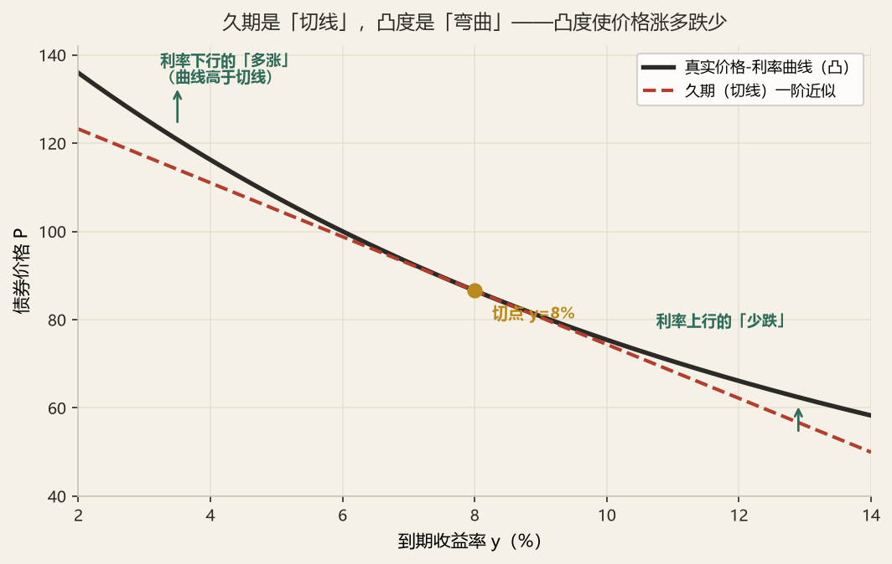
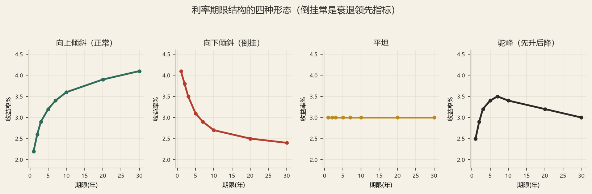
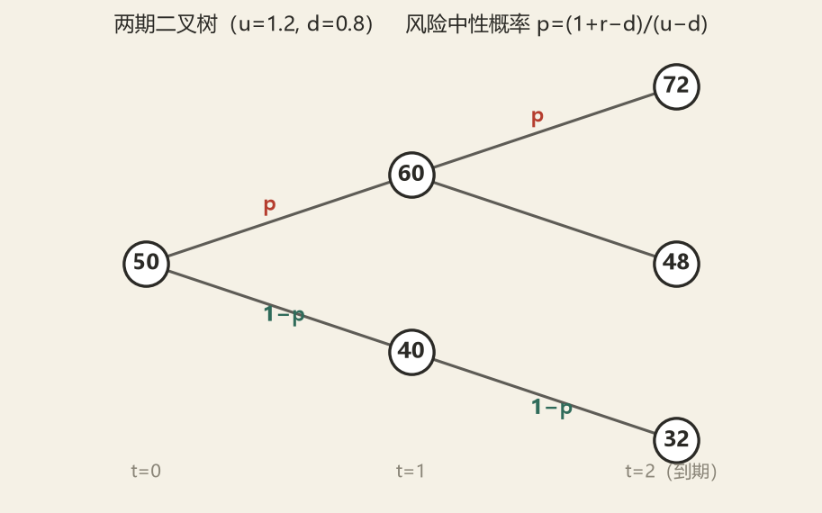

资产定价理论
4.0三根支柱总览
本章内容看似庞杂（债券、股票、期权、期货），但本质只有三根支柱。所有公式都是这三根支柱在不同资产上的展开。
债券现金流
票息 + 本金；含赎回、回售、可转、减记等条款调整
权益现金流
DDM 的股利、FCFE 的股权自由现金流、剩余收益 RI
期权收益的「非线性」
max(S−K, 0)——这是所有期权定价的出发点
期限结构
即期利率曲线 r(0,t)、远期利率 f(t, t+1)、四大理论
YTM 的「平均」性质
YTM 是内部收益率，只有平坦曲线时才等于即期利率
风险调整贴现率
CAPM → r = r_f + β·MRP；即「与风险匹配的贴现率」
久期与凸度
ΔP/P ≈ −D*Δy + ½·C·(Δy)²：一阶 + 二阶
希腊字母
Δ/Γ/V/Θ/ρ：五个维度、五种对冲
CTD 与基差
国债期货最便宜可交割券的选择逻辑
Hull-White 树
无套利思想构造利率二叉树（2012 秋第 37 题）
4.1债券定价：从现金流到到期收益率
债券定价只有一句话：把未来所有现金流，用与它到期时间匹配的即期利率折回今天。记住这一句，剩下的都是变形。
一、定价的三个层次
P₀ = Σt=1T Ct / (1 + rt)t （rt 为 t 年期即期利率）
层次二 · 单一贴现率（YTM，考试最常用）
P₀ = Σ Ct / (1 + y)t + F / (1 + y)T （y 为到期收益率）
层次三 · 特殊形式
P₀ = A × [1 − (1+y)−T] / y + F × (1+y)−T （C 为等额票息 A 时的年金式）
关键辨析：层次一与层次二在数学上是「不同的问题」。层次一是定价（已知即期利率求价格），层次二是求收益率（已知价格求 y）。只有当利率曲线平坦时，两者算出的 y 才等于即期利率。教材把这一点列为「YTM 的三大隐含假设」之一，考过三次。
二、YTM 的三个隐含假设
| 假设 | 含义 | 违反后果 |
|---|---|---|
| ① 持有至到期 | 投资者持有到到期日，中途不卖出 | 中途卖出时，实际收益取决于卖出时的利率 → 出现利率风险 |
| ② 票息按 y 再投资 | 每笔票息都能以 y 的利率再投资 | 若再投资利率下降，实际实现收益低于 y → 出现再投资风险 |
| ③ 利率曲线平坦 | 各期限即期利率相同且不变 | 出现期限结构不匹配，YTM 只是「混合平均」，不能反映真实贴现 |
两条风险的「相消」是核心考点：零息债只有利率风险（无票息可再投），溢价债再投资风险大，折价债利率风险大。当持有期等于久期时，两种风险恰好相消——这就是免疫的直观含义。
三、溢价、折价与票面利率的关系
y = c → P₀ = F （平价，par）
y < c → P₀ > F （溢价，premium）
（c 为票面利率，F 为面值；上述结论对一年付息一次的普通债券恒成立）
为什么？票面利率是「债券给你的利息」，YTM 是「市场要求的利息」。给你的 < 市场要的，就只能靠价格便宜来补——即折价。这层直觉比背结论更重要：所有「收益率上升则价格下降」的判断题，都可以用这句话回答。
债券定价及相关因素分析
看答案要点
五因素定性：
| 因素 | 上升时价格如何变 | 机制 |
|---|---|---|
| 票面利率 c | ↑ 价格上升 | 分子现金流变大 |
| 市场利率 / YTM | ↓ 价格下降 | 分母贴现因子变大 |
| 到期期限 T | 视折溢价而定 | 折价债：T↑则 P↓；溢价债：T↑则 P↑ |
| 面值 F | ↑ 价格上升 | 本金现金流变大 |
| 付息频率 | 频率↑ P 略↑ | 票息提前收到，再投资价值提升 |
四、含权债券的定价调整
可回售债券（putable）：P = P普通债 + P（回售权价值） → 价格更高、YTM 更低
可转债：P = max{纯债价值, 转换价值} + 期权时间价值
统一视角：含权债 = 普通债 + 期权。发行人持有的权利（赎回）是资产减项，持有人持有的权利（回售、转股）是资产加项。2017 年考过「可赎回债券的收益率与利率的关系」——记住：利率越低，赎回越可能被执行，可赎回债的价格被「压」得越厉害，即价格上限 = 赎回价。
债券久期计算，可赎回债券的收益率与利率的关系，久期法则（博迪第 16 章第 13 题）
看答案要点
三问结构：①久期计算 ②可赎回债的凸性反常 ③久期法则六条
（1）久期计算——见 4.2 节，麦考利久期按「时间加权现值」求。
（2）可赎回债与利率的关系 —— 这是本题的核心区分点
| 债券类型 | 价格-利率曲线的形状 | 凸性 | 结论 |
|---|---|---|---|
| 普通不可赎回债 | 凸向下（convex） | 正凸性 | 利率下行时涨得比久期预测多，上行时跌得比预测少 → 「涨多跌少」 |
| 可赎回债（低利率环境） | 凹向下（concave） | 负凸性 | 利率下行到赎回价附近，价格上涨被封顶；利率下行时涨得少，上行时跌得多 |
成因：利率下行 → 发行人更可能赎回再融资 → 投资者「涨不动」；利率上行 → 赎回权不被执行，债券退化为普通债 → 该跌还是跌。所以含权债的「有效久期」在两个方向上不同：下行有效久期 < 上行有效久期。
（3）久期法则六条见 4.2 节「久期六法则」表。
4.2久期、凸度与利率敏感性
这是全章性价比最高的知识点：公式不多、套路固定、每年至少 6–10 分。2023 年计算题第 4 题（修正久期）、第 7 题（修正久期 + 年化收益率 + 资产负债净资产变动）都落在这里。
一、三种久期，一条主线
DMac = Σ [ t × PV(Ct) ] / P₀ （权重 = 该期现金流现值占总价的比例，权重和为 1）
修正久期（Modified Duration）——「价格对利率的一阶敏感度」
D* = DMac / (1 + y/m) （m 为年付息次数；年付一次时 D* = DMac/(1+y)）
美元久期（Dollar Duration）——「利率变动 1 单位时的价格变动额」
DD = D* × P₀ （利率变动 1 个百分点时，价格变 DD/100）
三者关系一句话：麦考利久期是时间（单位：年），修正久期是弹性（无量纲，可理解为「百分比」），美元久期是金额。考试问「久期」时若不加限定，通常指麦考利久期；问「利率上升 1% 价格变动多少」时用修正久期。
二、久期六法则
| # | 法则 | 直觉解释 |
|---|---|---|
| 1 | 零息债的麦考利久期 = 到期期限 | 只有一笔现金流，加权平均时间就是它自己 |
| 2 | 付息债的久期 < 到期期限 | 票息提前回收，平均时间被拉短 |
| 3 | 票面利率越高，久期越短 | 现金流越靠前（票息多），加权平均越短 |
| 4 | 到期期限越长，久期越长（但增速递减） | 远期现金流的现值权重趋近于零，久期趋于上限（永续债久期 = 1/y + 1） |
| 5 | YTM 越低，久期越长 | 贴现率低 → 远期现金流现值占比上升 → 平均时间拉长。这是「低利率环境久期风险更大」的数学根源 |
| 6 | 永续债的久期 = (1+y)/y（麦考利） | 由 P = A/y 推出，是法则 4 的极限 |
最后一句「永续一加」指 DMac = 1 + 1/y，即 (1+y)/y；当 y = 8% 时为 13.5 年。
三、凸度：二阶修正
ΔP/P ≈ −D* × Δy
二阶近似（久期 + 凸度）
ΔP/P ≈ −D* × Δy + ½ × C × (Δy)²
凸度的定义
C = [ Σ t(t+1) × PV(Ct) ] / [ (1+y)² × P₀ ] （年付息一次）
注意符号：凸度项前是 加号，且 (Δy)² 恒为正——所以无论利率涨还是跌，凸度都使实际价格高于久期预测值。这就是「凸性是好东西」的数学表达：涨得多、跌得少。

计算修正久期。
看解题框架
（1）列现金流表（以 3 年期、票面 6%、年付一次、YTM = 8%、面值 100 为例）
| t | CFt | PV = CF/(1.08)t | 权重 w = PV/P₀ | t × w |
|---|---|---|---|---|
| 1 | 6 | 5.556 | 0.0583 | 0.0583 |
| 2 | 6 | 5.144 | 0.0540 | 0.1080 |
| 3 | 106 | 84.152 | 0.8835 | 2.6505 |
| P₀ | 94.852 | 0.9958≈1 | DMac=2.817 | |
（2）修正久期：D* = 2.817 / 1.08 = 2.608
（3）读数：YTM 上升 100BP，价格约跌 2.608%；上升 20BP，跌 0.52%。
给出一项投资的基本信息，求：①修正久期；②如果第二年卖出，年化收益率为多少；③利率下行 20BP，问资产规模及负债变动，净资产变动。
看解题框架
（1）修正久期：同上一题。
（2）第二年卖出的年化收益率——这是博迪式「持有期收益」题，务必分三块算：
年化收益率 = (总终值 / 初始投入)1/2 − 1
其中③需按「卖出时的剩余期限 + 当时的 YTM」重新定价。若题目未给 YTM 变化，则假设曲线不变（此时总收益恰好等于 YTM，因为 2 年持有期不一定等于久期，仍可能有偏差）。
（3）利率下行 20BP 的净资产变动——用久期缺口模型：
其中 k = L/A（杠杆比率），E = A − L（净资产 / 所有者权益）
利率下降（Δy < 0）时：若 DA > k·DL（正缺口），净资产 E 上升；若负缺口，净资产下降。
数值示范：资产 A = 1000 亿、久期 8；负债 L = 900 亿、久期 12；Δy = −0.2%。
ΔA ≈ −8 × 1000 × (−0.002) = +16 亿；ΔL ≈ −12 × 900 × (−0.002) = +21.6 亿；ΔE = 16 − 21.6 = −5.6 亿。
→ 利率下行，净资产反而减少，因为负债比资产更敏感（k·DL = 10.8 > DA = 8）。这正是长期寿险公司「利率下行侵蚀净资产」的数学表达，也是 ALM 专题的起点。
久期与凸度
看答案要点
可按「定义 → 用途 → 局限 → 相互补充」四段作答：
| 对比项 | 久期 | 凸度 |
|---|---|---|
| 数学含义 | 价格对利率的一阶导数（斜率） | 价格对利率的二阶导数（弯曲程度） |
| 单位 | 年 / 无量纲 | 年² |
| 用途 | 利率小幅变动的价格估算；免疫的匹配条件 | 利率大幅变动的价格估算；组合在同等久期下择优 |
| 局限 | Δy 较大时误差大（低估涨幅、高估跌幅） | 不能单独使用，必须与久期配对 |
| 实务表述：「久期告诉你风险有多大，凸度告诉你风险是好事还是坏事。」同等久期下应选凸度大的组合，因为其价格-利率曲线位于上方（凸度占优 / convexity dominance）。 | ||
① 资产现值 = 负债现值（PV 匹配，防「资不抵债」）；
② 资产久期 = 负债久期（一阶免疫，防利率小幅变动的净值波动）；
③ 资产的凸度 > 负债的凸度（二阶免疫，保证在利率任何方向变动下资产都跑赢负债）。
第③条是「资产要略多于负债的凸度」的原因——它是长期寿险公司配置超长期国债与长久期非标的底层逻辑。
4.3利率期限结构：即期、远期与四大理论
上一节把 y 当作常数，本节要松开这个假设。期限结构研究的是「同一种信用等级、不同期限的收益率之间是什么关系」。
一、三种利率的区别（最容易混）
| 利率 | 符号 | 含义 | 观察方式 |
|---|---|---|---|
| 即期利率（spot） | r(0,t) 或 st | 今天借出、t 年后一次性还本付息的年化利率 | 由零息债价格反推：P = F/(1+st)t |
| 远期利率（forward） | ft,T | 约定「t 时点起借、T 时点还」的利率，今天锁定、未来执行 | 由两条即期曲线无套利推出 |
| 到期收益率（YTM） | y | 使全部现金流现值等于价格的单一贴现率 | 由债券价格反解（内部收益率） |
(1 + sT)T = (1 + st)t × (1 + ft,T)T−t
一通百通的记忆方式：左边是「先存到 T」的终值，右边是「先存到 t 再按远期续存到 T」的终值，两者必须相等，否则套利。
单期远期（t 年后的 1 年期）：
1 + ft,t+1 = (1 + st+1)t+1 / (1 + st)t
近似式（年限较短、通常考试可直接用）：
ft,T ≈ [sT·T − st·t] / (T − t)
一个必须建立的直觉：远期利率是「市场今天对未来的预期」，但它包含了流动性溢价与风险溢价，因此 f ≠ E(未来即期利率)。这个差别正是四大期限结构理论的分歧所在。
二、四大期限结构理论

| 理论 | 核心主张 | 对「为什么长期利率通常更高」的解释 | 能否解释曲线倒挂 |
|---|---|---|---|
| ① 预期理论 （纯预期理论） | 长期利率 = 未来短期利率的几何平均，f = E(s) | 因为市场预期未来短期利率上升 | 能（预期未来降息则倒挂） |
| ② 流动性偏好理论 | 长期利率 = 预期短期利率 + 流动性溢价（随期限递增） | 投资者偏好短期，持有长期需补偿；因此 f > E(s) | 能，但需预期大幅降息才能倒挂 |
| ③ 市场分割理论 | 不同期限是独立市场，供需各自决定，互不替代 | 长期市场资金供给相对稀缺 | 能（各市场独立定价） |
| ④ 优先置产理论 （preferred habitat） | 投资者有「期限偏好区间」，但可被溢价吸引偏离 | 长期资金需求方需付出溢价 | 能 |
考试答题模板：「若曲线向上倾斜，预期理论认为是市场预期未来短期利率上升；流动性偏好理论认为是流动性溢价随期限递增；市场分割理论认为是长期资金供需失衡。三者并不互斥，实证上流动性偏好理论解释力最强。」
利率期限结构理论
看答案要点
选择题常以「下列说法正确的是」出现，正确答案往往落在「流动性偏好理论认为远期利率 = 预期短期利率 + 流动性溢价」这一类表述上。错误选项的典型设计：
②「市场分割理论认为不同期限债券完全可替代」——错，完全不可替代；
③「流动性溢价随期限递减」——错，递增。
五个期限从 1 年到 5 年的零息票债券，面值 1000 美元，价格均给出。①买入一份某种债券、卖出另一种债券多少份使得 0 时点现金流为 0，并求隔年现金流；②计算 3 年后的 2 年期远期贷款的实际有效利率；③涉及 (1+f5)(1+f4)−1 一类有效利率计算。
看解题框架
（1）0 时点现金流为零的份数
设买入 1 份 t 年期零息债、卖出 n 份 T 年期零息债：n = Pt / PT（价格比就是份数比）。
一期的净现金流 = 1000（t 年债到期收到）− n × 0（T 年债尚未到期）→ 若 T > t+1，则第 t+1 年仍为 0，需看清题目到底问哪一年。
（2）3 年后 2 年期远期贷款的实际利率
先反推即期利率：st = (1000/Pt)1/t − 1。
再求远期：(1+f3,5)² = (1+s5)⁵ / (1+s3)³。注意这里 指数是 2（贷款期限），不是 5——这是最常见的错法。
（3）有效年利率：若题目给出两段远期，则「连续两年的有效利率」= (1+ft)(1+ft+1) − 1，即两段复利相乘再减 1。不要简单相加。
4.4权益定价（一）：绝对估值三派
股票定价的三种绝对方法，本质是「用三种不同的现金流去贴现」：股利（DDM）、股权自由现金流（FCFE）、剩余收益（RI）。三者在假设一致时结果相同，实战中选择哪一个取决于「哪种数据更可信」。
一、股利贴现模型 DDM 的四个版本
V₀ = D₁ / r （股利恒定）
② 戈登增长模型（Gordon，恒定增长）
V₀ = D₁ / (r − g) = D₀(1+g) / (r − g) 要求 r > g
③ 两阶段模型（高速增长 n 年 + thereafter 稳定增长）
V₀ = Σt=1n Dt/(1+r)t + [Dn+1/(r − gL)] / (1+r)n
④ H 模型（增长率线性衰减）
V₀ = D₀(1+gL)/r + D₀·H·(gS − gL)/r （H = 高速增长期的一半）
H 模型的巧思：假设增长率从 gS 线性降到 gL，用 H（半衰期）替代无穷求和。当 gS = gL 时退化为戈登模型，可作自检。2015 年单选第 8 题就考了 H 模型计算——务必记住 H 是「一半」而不是「全期」。
二、增长从哪来：可持续增长率
由此推出「分红率 × 增长率」的取舍关系：
● ROE > r（公司能挣超额收益）→ 少分红（低 d）、高增长更值钱
● ROE < r（挣不到超额收益）→ 多分红更值钱（钱在公司手里被浪费）
● ROE = r → 分红政策无关（MM 定理的股利版）
2023 年计算 3 的原型就在这里：给出 E（每股收益）、β、rf、ROE、分红率，求内在价值。思路是：先用 CAPM 求 r → 再用 g = ROE×b 求 g → 再用 D₀ = E×分红率、D₁ = D₀(1+g) → 最后 V₀ = D₁/(r−g)。
某股票 E = 15%、β = 1.5、rf = 5%，每股盈利的再投资收益率 ROE = 25%、分红率 50%，每年分红。①计算该股票的内在价值；②当前股价 P = 120，一年后市价等于内在价值，求收益率。
看完整解答
（1）求贴现率 r
题目给出「股票 E = 15%」，按 F8 的惯例为市场期望收益率 RM；β = 1.5，rf = 5%。
r = 5% + 1.5 × (15% − 5%) = 5% + 15% = 20%
（2）求增长率 g
分红率 d = 50% → 留存比率 b = 1 − 50% = 50%
g = ROE × b = 25% × 50% = 12.5%
（3）求内在价值
每股盈利需要绝对数值才能算 D。若题目另给了每股收益（设为 EPS），则 D₀ = EPS × 50%，D₁ = D₀ × 1.125。
V₀ = D₁ / (r − g) = D₁ / (20% − 12.5%) = D₁ / 7.5% = 13.33 × D₁
若以 EPS 表示：V₀ = EPS×0.5×1.125/0.075 = EPS × 7.5，即 P/E = 7.5 倍。
（除以 E₁ 而非 E₀ 时，用 d 而非 d(1+g)）
（4）② 一年后收益率
若 P₀ = 120 且实际价值 V₀ > 120，则一年后 P₁ = V₁ = V₀(1+g)。
总收益 = 期间股利 D₁ + 资本利得 (P₁ − P₀)；收益率 = [D₁ + (V₁ − P₀)] / P₀。
快捷算法：若当前价格已经等于内在价值，则持有期收益率 = r（CAPM 要求收益）。若价格低于内在价值（低估），则收益率 > r，超出部分即为「价值回归」的一次性收益。
两阶段模型（基本与书本例题一样）
看解题框架
标准三步：
①高速增长期（n 年）的股利逐年贴现：Σ D₀(1+gS)t/(1+r)t；
②第 n 年末的终值：Pn = Dn+1/(r − gL) = D₀(1+gS)n(1+gL)/(r − gL)；
③将 Pn 折回 0 时点：Pn/(1+r)n；V₀ = ①+③。
三、FCFE / FCFF 与剩余收益模型
FCFE = 净利润 + 折旧摊销 − 资本支出 − 营运资本增加 + 净新增借款
V₀ = Σ FCFEt/(1+re)t （re 为股权成本 = CAPM）
FCFF（公司自由现金流）
FCFF = EBIT×(1−T) + 折旧摊销 − 资本支出 − 营运资本增加
V公司 = Σ FCFFt/(1+WACC)t → 股权价值 = 公司价值 − 净债务
剩余收益模型（RI / EBO）
RIt = Et − re × Bt−1 （超额收益 = 净利 − 期初净资产 × 股权成本）
V₀ = B₀ + Σ RIt/(1+re)t
剩余收益模型为什么重要：它把公司价值拆成两块——「今天的净资产 B₀」+「未来创造超额收益的现值」。这解决了 DDM 的一个致命缺陷：不分红的公司（如成长股、保险公司）无法用 DDM，但可以用 RI。而且 RI 对终值假设的敏感性远低于 DDM，这是它被卖方广泛使用的原因。
| 模型 | 现金流 | 贴现率 | 适用公司 | 主要缺陷 |
|---|---|---|---|---|
| DDM | 股利 | re | 分红稳定、成熟期公司（银行、公用事业） | 不分红/分红政策不稳定者失效 |
| FCFE | 股权自由现金流 | re | FCFE 为正且与盈利匹配的公司 | FCFE 常为负（高成长、高资本开支） |
| FCFF | 公司自由现金流 | WACC | 杠杆变动大、控制权交易（并购估值） | 需算 WACC，对资本结构假设敏感 |
| RI | 超额收益 | re | 不分红公司、金融/保险公司 | 依赖会计数据（净资产、净利）的质量；会计政策变更会扭曲 |
①自由现金流模型与剩余收益模型的比较；②剩余收益模型与内含价值模型的关系
看答案要点
第 2 问：FCF 与 RI 的比较
四个维度作答即可拿满：①现金流口径（FCF 看实体现金流，RI 看会计超额收益）；②数据来源（FCF 需预测资本开支与营运资本，RI 依赖资产负债表与利润表）；③对分红的依赖（都不依赖，优于 DDM）；④敏感性（FCF 对终值假设极敏感，RI 因以 B₀ 打底而更稳健）。
第 3 问：RI 与内含价值（EV）—— 这是本库与 F3 库的连接点
内含价值的经典分解：
VIF = 现有业务未来利润的现值（按风险贴现率）
新业务价值（NBV）= 当年新单未来利润的现值
与 RI 的对应关系：
| RI 模型 | 内含价值体系 | 含义 |
|---|---|---|
| B₀（期初净资产） | 调整后净资产 ANW | 「今天已经有的家底」——两者都要求按市值/公允价值调整 |
| Σ RIt/(1+r)t | 有效业务价值 VIF | 「存量业务未来创造的超额收益」 |
| 若再加新业务 | + 新业务价值倍数 × NBV | 「未来新单的价值」——RI 框架下相当于假设持续获得正 RI |
本质区别（答题金句）：
② RI 假设资金成本 = 股权成本 re；EV 用风险贴现率（RDR），通常 10%–11%，内含了对负债不确定性的补偿。
③ RI 是股东视角的剩余，EV 是保单视角的剩余。二者在「存量业务的未来利润现值」这一层上是同构的——EV 可以看作「RI 模型在保险业的一个行业特化版本」。
第 4 问（2012 秋延续）：从投资学角度阐述一般公司与保险公司价值的区别
三点核心差异：
① 现金流的方向与确定性反了。一般公司先投入后收钱（资本开支在前、收入在后）；保险公司先收钱后付款（保费在前、赔付在后），因此现金流为负久期——这正是「负债久期长于资产久期」的根源，也使得保险公司的投资端成为价值创造的主战场。
② 负债的计量是核心。一般公司的价值 ≈ 经营资产 − 带息负债，负债是「确定的名义金额」；保险公司的价值却取决于准备金假设（发生率、退保率、费用率、贴现率）。贴现率变动 50BP，EV 可能变动 10% 以上——这是保险股估值折价的根本原因。
③ 价值的时间结构不同。一般公司的价值主要在「未来新增」，存量资产易被复制；保险公司的价值一大半在存量有效业务（VIF），是已经锁定的、受利率影响但不受竞争影响的现金流。因此保险股分析必须「三分法」：ANW（现在）+ VIF（过去卖的保单）+ NBV×倍数（未来能卖的保单）。
股利贴现模型（博迪原题第 18 章第 20 题）
看解题框架
博迪第 18 章第 20 题的经典结构：给出「近期 ROE、留存比率、未来 ROE 变化、市场资本化率」，求①当前股价 ②市盈率 ③PVGO（增长机会现值）。
P₀ = E₁/r + PVGO
→ 第一项是「不增长的价值」（把全部盈利分掉），第二项是「增长机会的现值」
→ 若 ROE > r，PVGO > 0，增长创造价值；若 ROE < r，PVGO < 0，增长毁灭价值
标准套路：先算 b、g = ROE×b、D₁ = E₁(1−b)，再 V₀ = D₁/(r−g)；PVGO = V₀ − E₁/r。若后续 ROE 下降，则用两阶段模型。
4.5权益定价（二）：相对估值与适用范围
绝对估值算「应该值多少」，相对估值算「比同类贵还是便宜」。2012 秋第 38 题直接考「相对价值法的优缺点及适用范围」（5 分），2015、2023 年也各有一道 PE/PB 的选择题。
一、五大倍数
| 倍数 | 公式 | 驱动因素 | 适用 | 不适用 |
|---|---|---|---|---|
| P/E 市盈率 | P₀/E₁ = d/(r−g) | 分红率、增长率、风险 | 盈利稳定、成熟行业（消费、公用事业） | 亏损公司、周期股（E 剧烈波动）、高杠杆公司 |
| P/B 市净率 | P₀/B₀ = (ROE−g)/(r−g) | ROE、增长率、风险 | 金融、保险、银行（资产即业务） | 轻资产公司（净资产不反映价值，如互联网） |
| P/S 市销率 | P₀/S₁ | 净利率、周转率、增长 | 尚未盈利但有收入的成长公司 | 低毛利、成本结构差异大的行业 |
| PEG | (P/E) / g×100 | — | 高成长公司横向比较（PEG < 1 视为便宜） | 负增长、低增长公司（分母失真） |
| EV/EBITDA | (市值+净债务)/EBITDA | 经营效率 | 资本结构差异大、跨国比较、并购 | 重资产折旧政策差异大的行业 |
相对价值法的优缺点及适用范围。
看标准答案
定义：相对价值法（市场法）是通过可比公司或可比交易的估值倍数，推算目标公司价值的方法，包括 P/E、P/B、P/S、EV/EBITDA 等。
优点：
① 简单快速——只需少数输入（价格与某一财务指标），不像 DCF 需长期预测；
② 反映市场情绪与当下定价——它是「市场愿意付多少」的直接读数，适合判断相对贵贱、寻找套利机会；
③ 数据易得、可跨公司横向比较——尤其适合并购定价、IPO 定价、行业排序。
缺点：
① 「可比」很难成立——业务结构、成长阶段、会计政策、资本结构不同，倍数不可比；
② 系统性高估/低估无法识别——若整个行业被高估，用行业平均倍数会「一错俱错」（相对估值不能回答「整体贵不贵」）；
③ 会计口径敏感——非经常性损益、折旧政策、并购商誉都会扭曲分母。
适用范围：① 有足够多业务相近的可比公司、且市场定价相对有效的行业（成熟期行业、金融业）；② 用于相对判断（选股、择时、IPO 定价），而非绝对内在价值判断。实务中通常与 DCF 交叉验证使用。
关于市盈率模型、市净率模型的描述和适用情况
看答案要点
核心判断依据（一句话）：看分母的口径是否与「价值创造的核心」一致。
● 银行、保险：价值创造来自「资产规模 × 利差/ROE」，资产即业务 → 用 P/B；且 P/B > 1 意味着市场认可其 ROE > r。
● 消费品、制造业：价值创造来自「销售的盈利能力」→ 用 P/E。
● 互联网、轻资产：净资产不反映真实价值（人力资本、网络效应）→ P/B 失效，应用 P/S 或 EV/EBITDA。
市盈率 PE
看答案要点
选择题常考「P/E 的倒数（盈利收益率 E/P）与债券收益率比较」：E/P 本质上是股权投资的「当期账面回报率」，可与 10 年国债收益率做「股债性价比」比较。当沪深 300 的 E/P 为 7%（即 P/E = 14）而 10 年国债为 2.5% 时，股权风险溢价（ERP）达 4.5%——这是险资判断「权益仓位该加还是该减」的一个参考锚。
4.6期权定价：二叉树与 Black-Scholes
期权定价的全部思想，浓缩成一句话：用标的资产与无风险资产，复制出期权的到期收益，那么期权今天的价格必须等于复制组合的成本——否则就有套利。
一、单期二叉树：从「复制」出发
风险中性概率
p = (1 + r − d) / (u − d) （连续复利时：p = (erT − d)/(u − d)）
期权价格
C₀ = [ p × Cu + (1−p) × Cd ] / (1 + r)
复制组合（对冲比率）
Δ = (Cu − Cd) / (Su − Sd) （买 Δ 份股票 + 借入 B）
B = (Cd − Δ·Sd) / (1+r) → C₀ = Δ·S₀ − B
两种算法必须都会：「风险中性法」快、「复制法」能回答「对冲比率是多少」。两者结果恒等，这就是「风险中性定价与无套利定价等价」的含义。考试若问「需要买多少股股票对冲」，只能用复制法。

二、两期二叉树
Cu = [p·Cuu + (1−p)·Cud]/(1+r)
Cd = [p·Cud + (1−p)·Cdd]/(1+r)
C₀ = [p·Cu + (1−p)·Cd]/(1+r)
美式期权：在每个节点都要比较「继续持有价值」与「立即行权价值」，取较大者。
欧式期权：只需在到期日取 max，中间节点不比较。
注意 u、d 与波动率的关系：u = eσ√Δt，d = 1/u = e−σ√Δt
2023 年考「美式期权的计算：两期，看涨」——两期看涨的美式期权在无股利时不会提前行权，因此价格等于欧式；但若题目给了股利或深度实值，就需要在每个节点做比较。答题时务必写出「比较」这一步，即使结论是不提前行权。
美式期权的计算：两期，看涨。
看解题框架
关键判断：两期看涨期权是否提前行权？无股利时：不提前行权（提前行权相当于放弃时间价值，且要提前付出 K）。有股利时：可能在除息前提前行权（为了获得股利）。看跌期权则可能提前行权（为了提前拿到 K 去吃利息，尤其深度实值时）。
另一个高频考点（2023 选择）：「虚值期权是否有时间价值和内在价值」
| 期权状态 | 内在价值 | 时间价值 | 总价值 |
|---|---|---|---|
| 实值（in-the-money） | S−K > 0 | > 0 | S−K + TV |
| 平值（at-the-money） | 0 | > 0 | TV |
| 虚值（out-of-the-money） | 0 | > 0（只要未到期） | TV > 0 |
| 到期日的虚值 | 0 | 0 | 0 |
结论：虚值期权没有内在价值，但有时间价值（因为到期前仍有转实的可能）。只有「到期日的虚值期权」价值为零。这是选择题的经典陷阱。
三、看涨看跌平价关系（Put-Call Parity）
C + PV(K) = P + S₀ → C − P = S₀ − K·e−rT
有股利（连续股息率 q）
C − P = S₀·e−qT − K·e−rT
离散股利：用 S₀ − PV(D) 替代 S₀
为什么必须成立：组合 A（买看涨 + 存 PV(K) 现金）与组合 B（买看跌 + 买股票）在到期日收益完全相同（都等于 max(ST, K)）。既然未来一样，今天价格必须一样，否则套利。这就是推导的全部，考试若要求「用 X₀、P₀、B₀、K 表示 C₀」，写出这条收益等同即可。
市场上有 A（股票，价格过程 X）、B（欧式看涨，执行价 K）、C（欧式看跌，执行价 K）、D（T 年期零息无风险债，利率 r）。用 X₀、P₀、B₀、K 表示 C₀，写出推导过程。
看标准推导
推导（三步）：
第一步 · 构造两个组合
组合 Ⅰ：买入 1 份看涨期权 C（价格 C₀）+ 买入 1 份零息债（价格 B₀，到期还 K）
组合 Ⅱ：买入 1 份看跌期权 P（价格 P₀）+ 买入 1 份股票（价格 X₀）
第二步 · 比较 T 时刻的收益
| 情形 | 组合 Ⅰ 到期值 | 组合 Ⅱ 到期值 |
|---|---|---|
| XT ≥ K | max(XT−K,0) + K = XT | 0 + XT = XT |
| XT < K | 0 + K = K | (K−XT) + XT = K |
两种情形下收益完全相等，均为 max(XT, K)。
第三步 · 无套利 → 今日价格相等
C₀ + B₀ = P₀ + X₀
故：C₀ = P₀ + X₀ − B₀
若 B₀ 定义为「到期偿还 1 元」的零息债价格，则 B₀ = e−rT，有 C₀ = P₀ + X₀ − K·e−rT；若 B₀ 定义为「到期偿还 K 元」的债券价格，则 C₀ = P₀ + X₀ − B₀。
买入价格为 A 的欧式看涨期权，卖出价格为 B 的欧式看跌期权，期限相同，期权费差额为 0。①B > A 和 B = A 时的交易策略分别是什么？原因？②有关交易头寸。
看解题框架
核心：期权费差额为 0 即 C = P，代入平价关系 C − P = S₀ − PV(K)：
即：当前股价恰好等于执行价的现值（期权处于「远期平值」状态）
（1）B > A 时（看跌期权费更高）
由 C − P = S₀ − PV(K) < 0 → S₀ < PV(K)，即股价低于执行价现值。
此时买看涨、卖看跌：合成一个远期多头（到期收益 = ST − K）。由于 S₀ < PV(K)，这个合成多头相当于以低于现值的价格买入标的，具有正的价值 → 应当执行「买入看涨 + 卖出看跌」的合成多头策略。
（2）B = A 时（期权费相等）
由 C = P → S₀ = PV(K)。此时合成多头（ST − K）的现值为零，不存在无风险套利机会。
策略：可做「转换套利（conversion）」或「反向转换（reversal）」的头寸组合，但两种方向都无套利收益，实际意义在于做市商对冲敞口：买 C + 卖 P + 卖空股票 + 买入 PV(K) 债券 = 零成本、零风险、零收益。
（2）交易头寸的完整表述（答题要写出四腿）
| 策略 | 看涨 | 看跌 | 标的 | 债券 | 合成效果 |
|---|---|---|---|---|---|
| 合成远期多头 | 买 C | 卖 P | — | — | 到期得 ST − K |
| 合成远期空头 | 卖 C | 买 P | — | — | 到期得 K − ST |
| 转换套利 | 买 C | 卖 P | 卖空 S | 买 PV(K) 债 | 锁定无风险收益（若 C 便宜时为正） |
| 反向转换 | 卖 C | 买 P | 买 S | 借钱（卖债） | 锁定无风险收益（若 C 贵时为正） |
期货期权的二叉树：现价 50，两年期，无风险市场利率 6%，价格可能上涨或下降 20%。①构造一个期货欧式期权的二叉树模型；②执行价 60 时的欧式看涨期权价值；③执行价 60 时的欧式看跌期权价值，并证明欧式看跌-看涨期权满足的平价公式。
看完整解答
（1）构造二叉树
u = 1.2、d = 0.8（价格上/下 20%）。期货价格 F₀ = 50。
p = (1 − d)/(u − d) = (1 − 0.8)/(1.2 − 0.8) = 0.2/0.4 = 0.5
（因为期货价格的期望在风险中性测度下不增长，漂移为 0，故分子是 1 而不是 1+r）
期货价格树：
| 层 | 结点 | 期货价格 F |
|---|---|---|
| t=0 | F₀ | 50 |
| t=1 | Fu / Fd | 60 / 40 |
| t=2 | Fuu / Fud / Fdd | 72 / 48 / 32 |
（2）欧式看涨期权（K = 60）
到期收益：Cuu = max(72−60,0) = 12；Cud = max(48−60,0) = 0；Cdd = max(32−60,0) = 0
倒推 t=1：
Cu = [0.5×12 + 0.5×0]/1.06 = 6/1.06 = 5.660
Cd = [0.5×0 + 0.5×0]/1.06 = 0
倒推 t=0：
C₀ = [0.5×5.660 + 0.5×0]/1.06 = 2.830/1.06 = 2.670
验算（直接风险中性期望法）：C₀ = [p²×12]/(1.06)² = 0.25×12/1.1236 = 3/1.1236 = 2.670 ✓
（3）欧式看跌期权（K = 60）与平价验证
到期收益：Puu = 0；Pud = 60−48 = 12；Pdd = 60−32 = 28
Pu = [0.5×0 + 0.5×12]/1.06 = 5.660；Pd = [0.5×12 + 0.5×28]/1.06 = 20/1.06 = 18.868
P₀ = [0.5×5.660 + 0.5×18.868]/1.06 = 12.264/1.06 = 11.570
平价关系验证（期货期权版）：
左边：2.670 − 11.570 = −8.900
右边：(50 − 60)/(1.06)² = −10/1.1236 = −8.900 ✓
（对比：现货期权的平价是 C − P = S₀ − K/(1+r)T，即 −10/1.1236 = 50 − 56.18 = −6.18。差别在于期货期权不需要为 S₀ 与 PV(K) 之间的关系额外付出成本。）
四、Black-Scholes 模型
C₀ = S₀·N(d₁) − K·e−rT·N(d₂)
欧式看跌
P₀ = K·e−rT·N(−d₂) − S₀·N(−d₁)
其中
d₁ = [ln(S₀/K) + (r + σ²/2)·T] / (σ√T)
d₂ = d₁ − σ√T
N(·) 为标准正态分布累积函数；N(d₂) 经济含义 = 期权到期时处于实值的风险中性概率
五个输入、一个输出：S₀（现价）、K（执行价）、T（期限）、r（无风险利率）、σ（波动率）。只有 σ 不可直接观测——这就是「隐含波动率」存在的原因，也是期权交易本质上是「交易波动率」的原因。
| 输入变量上升 | 看涨期权价格 | 看跌期权价格 | 直觉 |
|---|---|---|---|
| S₀（股价）↑ | ↑ | ↓ | 涨了，看涨更值钱 |
| K（执行价）↑ | ↓ | ↑ | 买贵了，看涨更不值钱 |
| T（期限）↑ | ↑ | ↑ | 时间越长，转实的机会越大（无股利时） |
| r（利率）↑ | ↑ | ↓ | K 的现值变小 → 看涨受益；提前拿 K 的机会成本变大 → 看跌受损 |
| σ（波动率）↑ | ↑ | ↑ | 唯一同时推高看涨与看跌的因素——因为期权收益是「单边不对称」的，波动越大越有利 |
①美式看跌期权 ②B-S 模型与看涨-看跌平价关系
看答案要点
（1）美式看跌期权的核心特点
① 可能提前行权：深度实值时，提前行权可立即拿到 K 并按市场利率再投资，若这部分利息超过「等待的时间价值」，就应行权。
② 美式看跌 ≥ 欧式看跌，且美式看跌 ≥ K − S₀（内在价值下界更紧，因可立即行权）。
③ 提前行权的边界：当 S₀ 足够低（深度实值）、r 足够高、T 足够长时，提前行权最优。无股利的美式看涨则永不提前行权——这是最经典的对称考点。
（2）B-S 与平价关系的关系
B-S 模型给出 C₀ 后，可直接用平价关系求 P₀ = C₀ − S₀ + K·e−rT，无需再算一遍 N(−d₁)、N(−d₂)。
验证：把 C₀ = S₀N(d₁) − Ke−rTN(d₂) 代入上式，得
P₀ = S₀N(d₁) − Ke−rTN(d₂) − S₀ + Ke−rT = Ke−rT[1−N(d₂)] − S₀[1−N(d₁)] = Ke−rTN(−d₂) − S₀N(−d₁) ✓
这正是看跌期权的 B-S 公式。所以「看跌公式」不是独立推导出来的，而是平价关系的推论。
变额年金保险产品，最低累积保证。保险金 = max{保证给付 G，子账户市值}。保费全部投资于风险资产，价值服从几何布朗运动（μ, σ），期限 T，连续无风险利率 r。①写出变额年金价格满足的等式；②保险公司为对冲波动风险持有的风险资产权重。
看答题框架
（1）价格等式
投保人在 T 时刻获得 max(G, ST) = ST + max(G − ST, 0) = ST + 看跌期权收益
即：变额年金价值 = 账户价值 + 最低保证的价值
用 B-S 展开：
V₀ = S₀ + G·e−rT·N(−d₂) − S₀·N(−d₁)
其中 d₁ = [ln(S₀/G) + (r + σ²/2)T]/(σ√T)，d₂ = d₁ − σ√T
等价写法（用看涨）：V₀ = G·e−rT + C₀（看涨，执行价 G）——由平价关系可知两式相等。实务中保险公司常用「债券 + 看涨」的视角来理解：先锁定 G 的现值，再用剩余的钱买上涨期权。
（2）对冲权重
对 S₀ 求偏导（即 delta）：∂V₀/∂S₀ = 1 + ∂P₀/∂S₀ = 1 + [N(d₁) − 1] = N(d₁)
经济含义：当账户市值远高于保证（深度实值，d₁ 很大）时，N(d₁) → 1，几乎全部投风险资产；当账户市值远低于保证（深度虚值）时，N(d₁) → 0，几乎全部投债券以锁定 G。这就是「动态保本」的内在机制。
4.7希腊字母与期权风险分解
如果 S₀、σ、T、r 都在变，期权价格的变化就是一个多元函数的全微分。每个希腊字母，就是这个全微分中的一项。2015 年单选第 23 题直接考五个希腊字母的定义，2014 年主观第 6 题考 delta。
dC = Δ·dS + ½Γ·(dS)² + V·dσ + Θ·dt + ρ·dr
每项就是你暴露的「一种风险」；每项前的系数，就是你对那种风险的「敞口大小」。
| 希腊字母 | 定义 | 看涨期权 | 看跌期权 | 含义与对冲 |
|---|---|---|---|---|
| Delta（Δ） | ∂C/∂S | 0 ~ 1（实值趋 1） | −1 ~ 0 | 标的涨 1 元，期权涨 Δ 元。Δ 中性 = 用 Δ 份标的对冲（动态对冲的基础） |
| Gamma（Γ） | ∂²C/∂S² = ∂Δ/∂S | > 0（平值最大） | > 0 | Δ 的变化速度。Γ 大 = 需频繁调仓；多头期权 = 正 Γ，空头 = 负 Γ |
| Vega（V） | ∂C/∂σ | > 0（平值最大） | > 0 | 波动率升 1%，期权涨多少。期权多头 = 做多波动率 |
| Theta（Θ） | ∂C/∂t（时间流逝） | 通常 < 0 | 通常 < 0 | 时间价值每天衰减的量。期权多头 = 付 Θ、收 Γ/Vega；期权空头 = 收 Θ、付 Γ/Vega |
| Rho（ρ） | ∂C/∂r | > 0 | < 0 | 利率敏感度。短期期权几乎不重要（ρ 最小），长期期权才需关注 |
符号记忆三句：①看涨 Δ 正看跌 Δ 负；②长期权（多头）Γ 正、Vega 正、Θ 负；③Rho：看涨正、看跌负（能记住第②句，大半选择题就能秒杀）。
欧式看涨看跌期权的 delta
看答案要点
看涨：ΔC = N(d₁) （0 ~ 1，恒为正）
看跌：ΔP = N(d₁) − 1 = −N(−d₁) （−1 ~ 0，恒为负）
关键恒等式：ΔC − ΔP = 1
（由平价关系 C − P = S₀ − Ke−rT 两边对 S 求导即得，因为后两项与 S 无关）
这个恒等式的三层含义（答题加分点）：
① 「买看涨 + 卖看跌」= 买 1 份股票——这就是上一节 2023 年第 6 题的「合成远期多头」，delta 恰好为 1。
② 对冲一份看涨空头，需买 N(d₁) 份股票；而对冲一份看跌空头，需卖空 N(−d₁) 份股票（即 ΔP 为负，空头的 Δ 为正）。
③ 动态对冲（delta hedging）的逻辑：Δ 随 S 变化 → 必须不断调仓 → 调仓成本与 Γ 成正比。Black-Scholes 的核心洞察是：若可以连续无成本调仓，则期权可被完全复制，故其收益必须等于无风险利率。
关于 Delta、Theta、Gamma、Vega、Rho 的定义的描述，哪些不正确
看答案要点
五个典型错误描述（都是真题爱考的陷阱）：
② 「Theta 表示期权价值对波动率的敏感度」——错，那是 Vega；Theta 是时间；
③ 「到期日临近时 Vega 增大」——错，Vega 减小（时间越少，波动率的影响越小）；
④ 「平值期权的 Gamma 最小」——错，最大；
⑤ 「看跌期权的 Delta 为正」——错，为负。
4.8国债期货、CTD 与利率衍生品
这是本章最「实务」也最容易失分的部分：公式不难，但概念多、细节多。2023 年计算题第 5 题完整考了转换因子与最便宜可交割券（CTD），2012 秋第 37 题考了 Hull-White 二叉树构造。
一、国债期货的三个核心概念
CF = 把可交割券的现金流，按标准券票面利率 3%（中国 10 年期国债期货合约规定）折现到交割月的价值 ÷ 面值 100
② 发票价格（Invoice Price）
发票价格 = 期货结算价 × CF + 应计利息
③ 基差与最便宜可交割券（CTD）
基差 = 现券净价 − 期货价格 × CF
CTD = 基差最小的券（等价于「买入现券 + 交割」的成本最低）
为什么会有 CTD：国债期货合约允许用一篮子债券交割，但每只券的票面利率、期限不同，必须用 CF 折算成「等效于标准券」的数量。空头方有权选择用哪只券交割，必然选对自己最有利（成本最低）的那只——这就是 CTD。期货价格本质上跟随 CTD 的价格。
今天为 2023 年 6 月 25 日，长期国债期货合约价格 118.72，标的的面值为 100。①债券 A 面值 100，票面利率 10%，交割月份第一天起 15 年 7 个月到期，利率 6%，半年复利一次，求转换因子；②债券 B 面值 100，票面利率 7%，21 年 4 个月到期，同样条件求转换因子；③债券报价分别为 169、136，问哪个更便宜交割？6 月 25 日交割，应计利息 4.83，则卖出债券现价是多少？
看完整解答
（1）债券 A 的转换因子
已知：票面 10%、半年付息（每期 5 元）、剩余期限 15 年 7 个月、折现率 6%（年，半年 3%）。
折算期数：15 年 7 个月 = 15.583 年 ≈ 31.17 个半年期。
标准处理：整半年期数 = 31 期（15 年 6 个月），零头 1 个月。
按标准做法（先算到第一个付息日的价值，再往前折 1 个月）：
① 从第一个付息日（1 个月后）起，剩余 31 期付息（含最后一次本金）：
PV1 = 5 × [1 − 1.03−31]/0.03 + 100 × 1.03−31
1.0331 = 2.5001 → 1.03−31 = 0.4000
PV1 = 5 × (1 − 0.4000)/0.03 + 100 × 0.4000 = 5 × 20.000 + 40.00 = 140.00
② 往前折 1 个月（半年期折现率 3%，1 个月 = 1/6 个半年期）：
PV0 = 140.00 × 1.03−1/6 = 140.00 × 0.99509 = 139.31
③ 减去应计利息（1 个月的应计利息 = 5 × 1/6 = 0.833）：
净价 = 139.31 − 0.833 = 138.48
④ CFA = 138.48 / 100 = 1.3848
（2）债券 B 的转换因子
已知：票面 7%（每期 3.5 元）、剩余 21 年 4 个月、折现 3%（半年）。
整半年期数 = 42 期（21 年），零头 4 个月。
1.0342 = 3.4241 → 1.03−42 = 0.2920
① PV1 = 3.5 × (1 − 0.2920)/0.03 + 100 × 0.2920 = 3.5 × 23.600 + 29.20 = 82.60 + 29.20 = 111.80
② 往前折 4 个月 = 4/6 个半年期：
PV₀ = 111.80 × 1.03−4/6 = 111.80 × 0.98048 = 109.62
③ 应计利息 = 3.5 × 4/6 = 2.333；净价 = 109.62 − 2.333 = 107.29
④ CFB = 107.29 / 100 = 1.0729
（3）哪个更便宜交割？卖出债券现价是多少？
判据：比较「买入现券成本 − 交割收入」，即基差，最小者为 CTD。
期货价 118.72；应计利息 4.83。
| 券 | 报价（净价） | CF | 期货 × CF | 基差 = 净价 − 期货×CF |
|---|---|---|---|---|
| A | 169 | 1.3848 | 164.40 | 169 − 164.40 = +4.60 |
| B | 136 | 1.0729 | 127.38 | 136 − 127.38 = +8.62 |
基差最小者为债券 A → A 是 CTD，更便宜交割。
卖出债券的现价（全价）：
现价 = 净价 + 应计利息 = 169 + 4.83 = 173.83
（若问「交割时收到的发票金额」= 118.72 × 1.3848 + 4.83 = 164.40 + 4.83 = 169.23）
估值期货内在价值，套利组合，什么时候不存在套利边际。
看答案要点
F₀ = S₀ × (1 + r − q)T 或连续复利：F₀ = S₀·e(r−q)T
（r 为融资成本，q 为持有收益 / 股息率 / 便利收益）
基差 = S₀ − F₀；期货内在价值 = F实际 − F理论（>0 为高估）
（1）套利组合
| 情形 | 判断 | 套利操作（现金-持有套利） | 到期收益 |
|---|---|---|---|
| F实际 > F理论 | 期货高估 | 借钱买入现券 + 卖出期货（cash-and-carry） | F实际 − F理论 > 0 |
| F实际 < F理论 | 期货低估 | 卖空现券 + 投资无风险 + 买入期货（reverse cash-and-carry） | F理论 − F实际 > 0 |
（2）什么时候不存在套利边际（无套利区间）
实务中存在三类摩擦，使 F 可以在一个区间内偏离理论值而不触发套利：
① 交易成本（手续费、买卖价差）；
② 卖空限制（无法卖空或成本极高——我国融券成本高，故反向套利几乎不可行）；
③ 融资约束与保证金（借款利率 > 贷款利率，形成不对称区间）；
④ 交割选择权（国债期货的 CTD 选择权、品质期权、时间期权）。
二、利率衍生品：上限、下限与 Hull-White 二叉树
每个 Caplet 的收益 = max(L·(rt − RK)·Δt, 0) （L 为名义本金，RK 为上限利率）
利率下限（Floor）= 一系列利率看跌期权（Floorlet）
收益 = max(L·(RK − rt)·Δt, 0)
互换期权（Swaption）：进入利率互换的权利
平价关系：Cap − Floor = Swap（利率上限 − 利率下限 = 利率互换）
为什么保险资金关心利率下限：若公司持有浮动利率资产（如浮息债、利率互换收取浮动端），利率下行会直接减少收入。买入利率下限（Floor）= 为浮动收益买一个最低保障——这在结构上与变额年金的「最低累积保证」完全同构。
已知短期利率服从单因素 Hull-White 模型：dr = θ(t)dt − αr dt + σdZ，α = 0.1、σ = 0.02，Δt = 1 年，Δr = 0.04。1/2/3 年期即期利率 R(1) = 9%、R(2) = 10%、R(3) = 11%。树中结点 (i, j) 表示 ri,j = r₀ + jΔr。①构造二叉树；②计算执行利率 10%、数量 10 万元、每年支付一次的 2 年期利率下限在 0 时刻的价值。
看解题框架与关键思路
（1）构造二叉树（四大步）
第一步 · 定步长与风险中性概率
对 dr = (θ(t) − αr)dt + σdZ，离散化后（Δt = 1）：
利率上升概率 p、下降概率 1−p，利率变动幅度 ±Δr = ±0.04。
由匹配波动率：σ√Δt = 0.02×1 = 0.02，而树中单期利率变动的标准差 = √[p(1−p)] × 2Δr。
取 p = 0.5 时，√(0.25)×2×0.04 = 0.04 ≠ 0.02——因此题设给 Δr = 0.04 与 σ = 0.02，通常取 p = 0.5、Δr = σ√Δt = 0.02；若题目明确 Δr = 0.04，则 p 需由 σ√Δt = 2Δr√[p(1−p)] 反解，得 √[p(1−p)] = 0.02/0.08 = 0.25 → p(1−p) = 0.0625 → p = 0.5（唯一解）。验证：两者一致，说明 Δr = 0.04 是「每期最大变动」，而上下两节点各跳 0.04。
第二步 · 用即期利率校准 r₀
0 时刻的短期利率 r₀ 未知，需用「1 年期零息债价格 = 1/(1+R(1))」校准。
1 年期零息债价格 = 1/1.09 = 0.9174，而树中该价格 = 1/(1+r₀) → r₀ = 9%。
第三步 · 校准漂移 θ(t)（Hull-White 的灵魂）
若不做漂移调整，树只能重现已给定的 r₀；要重现 R(2)、R(3)，必须在每一列叠加时变漂移 a(t)。
方法（逐列校准）：令 2 年期零息债价格 1/(1.10)² = 0.8264 等于树中的期望贴现
E[1/((1+r₀)(1+r₁))] = 0.5×[1/(1.09)(1+ru)] + 0.5×[1/(1.09)(1+rd)]
解得第一列节点利率 ru、rd 的中心位置（即该列的漂移 a(1)），使两节点 = a(1) ± 0.04。
同理用 R(3) 校准第二列漂移 a(2)。这一步的本质：让树「内生的零息债价格」等于「市场观测值」，从而保证无套利。
第四步 · 完整树形（校准后示意）
校准后，各节点利率不再是 r₀ + jΔr 的简单对称（那只是 Ho-Lee 无均值回归的情形），而是随期限逐渐抬升（因为 R(1)<R(2)<R(3)，曲线向上，漂移为正）。
| 时刻 | 节点利率（示意，含漂移） | 概率 |
|---|---|---|
| t=0 | 9% | — |
| t=1 | 13% / 5% | 0.5 / 0.5 |
| t=2 | 17% / 9% / 1% | 0.25 / 0.5 / 0.25 |
（2）2 年期利率下限的定价（执行利率 10%，名义本金 10 万元，每年付一次，按「期末支付、期初定息」惯例）
两个 Floorlet 分别定价：
Floorlet 1（t=1 支付，基于 r₀）
收益 = max(10% − 9%, 0) × 10 万 = 0.01 × 100000 = 1000 元
现值 = 1000 / 1.09 = 917.4 元
Floorlet 2（t=2 支付，基于 r₁）
r₁ 上行 → 13%：收益 = max(10%−13%, 0) = 0
r₁ 下行 → 5%：收益 = max(10%−5%, 0) × 10 万 = 5000 元
期望收益 = 0.5×0 + 0.5×5000 = 2500 元
现值 = 2500 / (1.10)² = 2500 / 1.21 = 2066.1 元
利率下限总价值 = 917.4 + 2066.1 = 2983.5 元 ≈ 0.298 万元
Floornode = max(RK − rnode, 0)×L×Δt + [p·Flooru + (1−p)·Floord]/(1+rnode)
4.9演算器
债券久期、凸度与价格变动估算
两期二叉树期权定价（含美式比较）
国债期货：转换因子与最便宜可交割券（CTD）
4.10核心答案速查
| 考点问题 | 核心答案 |
|---|---|
| YTM 的三大假设 | 持有至到期、票息按 y 再投资、利率曲线平坦 |
| 溢价/折价与 y、c 的关系 | y<c 溢价；y>c 折价；y=c 平价 |
| 麦考利久期 vs 修正久期 | D* = DMac/(1+y/m)；前者是时间，后者是弹性 |
| 零息债的久期 | 麦考利久期 = 到期期限（只有一笔现金流） |
| 票面利率对久期的影响 | 票息越高久期越短（现金流越靠前） |
| YTM 对久期的影响 | YTM 越低久期越长（远期现金流权重上升） |
| 凸度项前的符号 | 恒为 +，故凸度使「涨多跌少」 |
| 远期利率公式 | (1+f) = (1+sT)T/(1+st)t |
| 预期理论 vs 流动性偏好 | 预期理论 f=E(s)；流动性偏好 f=E(s)+流动性溢价 |
| 戈登模型 | V₀ = D₁/(r−g)，要求 r>g |
| 可持续增长率 | g = ROE × b（b=留存比率） |
| 领先 P/E | P₀/E₁ = d/(r−g) |
| 剩余收益 RI | RIt = Et − re×Bt−1；V₀ = B₀ + ΣRI/(1+r)t |
| P/B 适用行业 | 金融、保险、银行（资产即业务）；轻资产行业失效 |
| 风险中性概率 | p = (1+r−d)/(u−d)（现货）；期货期权 p=(1−d)/(u−d) |
| 看涨看跌平价 | C − P = S₀ − K·e−rT |
| 看涨看跌 Delta 关系 | ΔC − ΔP = 1（看涨 N(d₁)，看跌 −N(−d₁)） |
| 唯一同时推高看涨看跌的因素 | 波动率 σ（期权收益单边不对称） |
| CTD 的判据 | 基差 = 净价 − 期货×CF，最小者即 CTD |
| 期货无套利区间 | 理论价不是一条线，是一个被交易成本撑开的区间 |
4.11教材深挖与易错辨析
深挖一：为什么「贴现率」是投资学与精算学的共同母语
一个贯穿全书的统一视角
把 CH.03 的 CAPM 与本章全部定价公式放在一起看，会发现它们讲的是同一件事：任何资产的价值，都是「现金流 × 贴现因子」的求和。差异只在于：
| 现金流 CFt | 贴现率 | 贴现因子的「风险观」 | |
|---|---|---|---|
| 债券 | 票息 + 本金（合同约定） | 即期利率 / YTM | 信用风险 + 利率风险 |
| 股票（DDM） | 股利（分红政策） | re = CAPM | β 所衡量的系统风险 |
| 期权 | max(S−K,0)（非线性） | 无风险利率 r（风险中性） | 通过「复制」把风险对冲掉 |
| 保险负债 | 赔付 - 保费（随机） | RDR / 准备金贴现率 | 发生率 + 退保 + 费用 + 利率 |
一个必须记住的「双层贴现」
保险公司的资产与负债，用的是两套不同的贴现率：资产端用市场利率（投资收益率），负债端在 IFRS17 下用「与现金流特征一致的当前市场利率」、在偿付能力下用监管指定的利率曲线。当资产贴现率下降而负债贴现率未同步下降（或反之），就会产生利差损益。这正是久期缺口模型（4.2 节）在精算语境下的表达。
深挖二：为什么「低利率环境」对寿险公司是致命的——用久期法则讲透
一条久期法则，解释一个行业困局
久期法则第 5 条：YTM 越低，久期越长。这条看似枯燥的规则，其实是整个寿险行业「低利率焦虑」的数学根源。
连锁反应的三步推导
第一步 · 负债端久期被动拉长。寿险准备金用低利率贴现时，远期负债（数十年后的满期给付）的现值占比大幅上升，导致负债久期在低利率下变得更长——传统寿险的负债久期可从 10 年拉长到 15 年以上。
第二步 · 资产端久期追不上。市场上没有足够长的资产去匹配 15 年以上的负债。30 年、50 年国债一票难求，于是出现久期缺口（负债久期 > 资产久期）。
第三步 · 利率再下一台阶，净资产加速受损。按久期缺口模型 ΔE ≈ −(DA−kDL)·A·Δy/(1+y)，正缺口 + 利率下行 = 净资产下降。且低利率下 DL 更大，同样的 20BP 下行，净资产损失比高利率时代更重——「越降越痛」。
投资视角：再投资收益 < 已承诺的定价利率 → 利差损
精算视角：负债久期 > 资产久期 → 利率下行的净资产损失
两句话讲的是同一件事。
破局的三个方向（都可从本章导出）：① 拉长资产久期（超长期国债、长久期非标、利率互换收固定）；② 缩短负债久期（开发期缴短险、分红险降低保证利率刚性）；③ 买入利率下限 / 对冲（为浮动收益保底）。
深挖三：期权定价的「风险中性」到底在说什么——一个常被误解的概念
最大的误解
「风险中性定价假设投资者不爱风险、用无风险利率贴现」——这句话错了一半。风险中性定价不假设任何人是风险中性的，它只是一个「数学等价技巧」。
正确的理解
B-S 推导的起点是「用标的 + 无风险资产，可以精确复制期权的收益」。一旦能复制，期权就与复制组合必须同价（否则套利）。而复制组合的价值与投资者的风险偏好无关——因为它是无风险的。
于是得到一个惊人结论：期权价格里不含任何关于「投资者有多厌恶风险」的参数，也不含标的的真实期望收益率 μ。定价只需要 S₀、K、r、σ、T 五个量——μ 消失了。
它不是改变世界，而是改变算账的坐标系——在这个坐标系里，所有资产的期望收益都等于 r。
对投资决策的启示
启示一 · 期权交易赚的是「定价错误」，不是「方向」。因为 μ 不进定价公式，看对方向 ≠ 期权赚钱；真正赚钱的是「你的 σ 估计比别人准」或「市场把 σ 定错了」。
启示二 · 隐含波动率 = 市场的 σ 报价。把市场价格反代回 B-S 解出的 σ，就是「隐含波动率」。它比历史波动率更前瞻。隐含波动率偏高 = 市场恐慌、期权贵 = 适合卖期权；偏低 = 适合买期权。
启示三 · 保险公司的「期权负债」也应这样看。分红险保证利率、万能险保底利率，都是公司「卖出的看跌期权」。它们的成本可以用 B-S 框架估算——这就是「保证成本（guarantee cost）」的精算含义。
六个高频易错点
4.12自测
- A. 2.61
- B. 2.82
- C. 2.90
- D. 3.00
看答案与解析
答案：A。
P₀ = 6/1.08 + 6/1.08² + 106/1.08³ = 5.556 + 5.144 + 84.152 = 94.852
DMac = (1×5.556 + 2×5.144 + 3×84.152)/94.852 = (5.556 + 10.288 + 252.456)/94.852 = 268.30/94.852 = 2.829
D* = 2.829/1.08 = 2.619 ≈ 2.61 → A
- A. 风险中性定价假设所有投资者都是风险中性的
- B. 风险中性概率是投资者对未来的真实概率估计
- C. 风险中性定价下，期权价格与标的真实期望收益率 μ 无关
- D. 风险中性定价要求市场无交易成本
看答案与解析
答案：C。
风险中性定价是「复制 + 无套利」的等价数学技巧，不假设任何人风险中性（A 错）；p 是「让标的按无风险利率增长」的等价概率，不是真实概率（B 错）；μ 从定价公式中消失（C 对）；无交易成本是 B-S 复制可行性的技术假设之一，但「风险中性」这个概念本身不依赖它（D 错）。
看答案与解析
① 风险中性概率：p = (1.04 − 0.9)/(1.1 − 0.9) = 0.14/0.2 = 0.7
② 标的树：100 → 110/90 → 121 / 99 / 81
③ 到期收益（K=100）：Cuu=21、Cud=0、Cdd=0
Cu = (0.7×21 + 0.3×0)/1.04 = 14.7/1.04 = 14.135；Cd = 0
C₀ = (0.7×14.135 + 0.3×0)/1.04 = 9.895/1.04 = 9.514
④ 对冲比率：Δ = (Cu − Cd)/(110 − 90) = 14.135/20 = 0.707（买 1 份期权需买 0.707 份标的）
⑤ 看跌与平价验证
Puu=0、Pud=1、Pdd=19；Pu=(0.7×0+0.3×1)/1.04=0.288；Pd=(0.7×1+0.3×19)/1.04=(0.7+5.7)/1.04=6.154；P₀=(0.7×0.288+0.3×6.154)/1.04=(0.202+1.846)/1.04=1.969
平价关系：C₀ − P₀ = 9.514 − 1.969 = 7.545；S₀ − K/(1.04)² = 100 − 100/1.0816 = 100 − 92.456 = 7.544 ✓（约等，四舍五入）
看答案与解析
优点：①简单快速、输入少；②反映市场当下定价，适合相对判断；③数据易得、可横向比较。
缺点：①可比公司难找；②无法识别系统性高估/低估；③对会计口径敏感。
金融业优先用 P/B 的三条理由：
① 资产即业务：银行的「存货」是贷款、保险的「存货」是投资资产，净资产直接对应生息/投资能力，P/B 反映「单位净资产的盈利能力（ROE）」；
② 盈利高度周期性且受准备金/拨备影响：银行拨备、保险准备金假设会大幅波动 E，P/E 分母不稳，而 B 相对稳定；
③ 监管以资本为核心：银保的偿付能力/资本充足率都以净资产为锚，P/B 与监管逻辑一致。
一句话收尾：P/B > 1 ⟺ 市场认为其长期 ROE > 股权成本 re；这是把 P/B 与剩余收益模型（RI）连起来的金句。